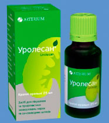

Уролесан 25мл,
Производитель: нет данных,
Годен до 10.09.2014,
Количество: 1 упаковка,
Форма выпуска: капли,
Днепроптровск, Украина
Отложить товар
Получить товар
Показать контакты
|
Уролесан – комбинированный спазмолитический препарат растительного происхождения.
Аналогами Уролесана Капсулы Уролесанпо фармакологической группе являются Урохол, Урохолум, Энуран, Арфазетин, Блемарен, Канефрон Н, Галидор, Фитолизин, Роватинекс. Структурные аналоги Уролесана по действующему веществу не производятся.
Состав и форма выпуска.
Препарат производят в следующих формах:
в виде капсул (таблеток); Одна капсула лекарства содержит 10,7 мг густого экстракта Уролесана. Состав сухого остатка: 6,33 мг шишек хмеля, 1,84 мг плодов моркови дикой, 1,46 мг травы душицы. Кроме этого, в состав препарата входит 7,46 мг масла мяты перечной и 25,5 мг масла пихты. Дополнительные компоненты: тальк, моногидрат, магния карбонат тяжелый, магния алюмометасиликат; динатрия эдетат, лактоза, крахмал картофельный.
в виде капель;
просмотреть детально все инструкцию
Состав капель: 8 г/100 мл пихтового масла, 2 г/100 мл масла мяты перечной, 11 г/100 мл касторового масла, 23 г/100 мл
экстракта плодов моркови дикой, 32,995 г/100 мл экстракта шишек хмеля, 23 г/100 мл экстракта душицы обыкновенной.
Капли содержат 60% этилового спирта.
в виде сиропа.
100 г сиропа содержит 4,3 г Уролесана. Другие компоненты: твин-80, кислота сорбиновая, кислота лимонная, вода
очищенная, сироп сахарный.
Фармакологическое действие Уролесана
Согласно инструкции Уролесан оказывает диуретическое, антиоксидантное, антибактериальное, спазмолитическое, желчегонное и мочегонное действие. Препарат очень быстро всасывается и, судя по отзывам об Уролесане, мгновенно снимает приступы печеночной и почечной колик, усиливая при этом кровоснабжение спазмированных органов. Лекарство, оказывая мягкое седативное действие, способствует выведению камней и песка из желчевыводящих и мочевыводящих путей, увеличивает выделение хлоридов и мочевины. Уролесан нормализует тонус мышц желчного пузыря и мочевых путей. Компоненты лекарственного средства формируют в моче защитный коллоид, изменяя её pH в кислую сторону.
Имеются отзывы об Уролесане, как препарате, оказывающем оздоравливающий эффект при лечении болезней органов дыхания (обструктивного бронхита, бронхиальной астмы).
Действие Уролесана начинается спустя полчаса после приема и сохраняется около пяти часов, достигая максимального эффекта через один-два часа. Выделяется лекарство почками и через пищеварительный тракт.
Показания к применению Уролесана
Согласно инструкции Сироп Уролесансуществуют следующие показания к применению Уролесана и аналогов Уролесана:
острые и хронические инфекции почек и мочевыводящих путей (пиелонефрит, цистит);
дискинезия желчных путей;
хронический холецистит;
желчнокаменная болезнь;
хронический простатит (в составе комплексного лечения);
лечение и профилактика мочекаменной болезни и мочекислого диатеза.
Данное лекарственное средство можно применять для профилактики и лечения инфекций мочевыводящих путей у беременных женщин. Применение препарата позволит снизить риск развития осложнений, связанных с инфекцией, в послеродовом периоде.
Противопоказания к применению Уролесана
повышенная чувствительность к любому из компонентов препарата;
детский возраст до семи лет (кроме сиропа);
язвенная болезнь двенадцатиперстной кишки и желудка;
диарея, тошнота, изжога;
гастрит;
сахарный диабет;
диаметр камней более 3 мм.
Уролесан – инструкция к применению
По инструкции Уролесан следует принимать внутрь до еды.
Лекарство в виде капель рекомендуется принимать трижды в сутки. Взрослым 8-10 (15-20 при почечной и печеночной колике) капель препарата следует капать на сахар. Продолжительность лечения от пяти дней до месяца. При необходимости курс лечения повторяют. Разовая доза для детей от 7 до 14 лет: по 5-6 капель лекарства трижды в день (на сахар).
По инструкции Уролесан в виде сиропа взрослым рекомендуется принимать по чайной ложке три раза в сутки. При почечной и печеночной колике разовую дозу следует однократно повысить до двух ложек. Продолжительность лечения от пяти дней до месяца. Разовая доза препарата детям от года до двух лет составляет 1-2 мл, от двух до семи лет – 2-4 мл, от 7 до 14 лет – 4-5 мл трижды в сутки.
Уролесан в капсулах детям после 14 лет и взрослым следует принимать по одной капсуле три раза в сутки. При почечной или печеночной колике разовую дозу следует однократно повысить до двух капсул. Курс лечения от пяти дней до месяца.
Побочные эффекты
Судя по отзывам об Уролесане, препарат в большинстве случаев переносится хорошо. В отдельных случаях при применении лекарства возможны аллергические реакции (зуд, ангионевротический отек, кожные высыпания), рвота, общая слабость, головокружение, тошнота, гипотензия.
При возникновении побочных эффектов рекомендовано обильное питье, прием активированного угля или же Атропина сульфата.
закрыть детальную инструкцию
|